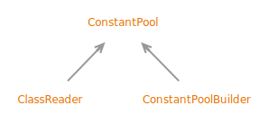

Interface ConstantPool
- All Known Subinterfaces:
ClassReader, ConstantPoolBuilder
public sealed interface ConstantPool
extends Iterable<PoolEntry>
permits ClassReader, ConstantPoolBuilder
Provides read access to the constant pool and the bootstrap method table of a
class file.
Index in the Constant Pool
The constant pool entries are accessed by index. A valid index is in the range of[1, size()). It is unusable if a LongEntry or DoubleEntry is at its previous
index.- See Java Virtual Machine Specification:
-
4.4 The Constant Pool
- Sealed Class Hierarchy Graph:
- 
- Since:
- 24
- See Also:
{kind=link}
-
Method Summary
Modifier and TypeMethodDescriptionintReturns the number of entries in the bootstrap method table.bootstrapMethodEntry(int index) Returns theBootstrapMethodEntryat the specified index within the bootstrap method table.entryByIndex(int index) Returns the entry at the specified index.<T extends PoolEntry>
TentryByIndex(int index, Class<T> cls) Returns the entry of a given type at the specified index.iterator()Returns an iterator over pool entries.intsize()Returns the exclusive upper bound of the valid indices of this constant pool.Methods declared in interface Iterable
forEach, spliterator
-
Method Details
-
entryByIndex
Returns the entry at the specified index.- API Note:
- If only a particular type of entry is expected, use
entryByIndex(int, Class). - Parameters:
index- the index within the pool of the desired entry- Returns:
- the entry at the specified index
- Throws:
ConstantPoolException- if the index is out of range of the constant pool, or is considered unusable
-
size
int size()Returns the exclusive upper bound of the valid indices of this constant pool. The actual number of entries is lower because0,size()are not valid, and a valid index may be unusable.- Returns:
- the exclusive upper bound of the valid indices of this constant pool
- See Also:
-
entryByIndex
Returns the entry of a given type at the specified index.- Type Parameters:
T- the entry type- Parameters:
index- the index within the pool of the desired entrycls- the entry type- Returns:
- the entry of a given type at the specified index
- Throws:
ConstantPoolException- if the index is out of range of the constant pool or considered unusable, or the entry is not of the given type
-
iterator
-
bootstrapMethodEntry
Returns theBootstrapMethodEntryat the specified index within the bootstrap method table.- Parameters:
index- the index within the bootstrap method table of the desired entry- Returns:
- the
BootstrapMethodEntryat the specified index within the bootstrap method table - Throws:
ConstantPoolException- if the index is out of range of the bootstrap methods
-
bootstrapMethodCount
int bootstrapMethodCount()Returns the number of entries in the bootstrap method table.- Returns:
- the number of entries in the bootstrap method table
-